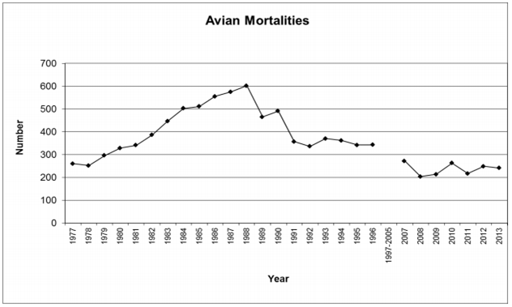

Our Project - Humans and Ospreys: Making the Hawks’ Nests Safe
Problem Statement
Bird Power Line Fatalities.
Is it a big problem?
Statistics
Between 0.9 and 11.6 million birds are killed by power line electrocution each year in the United States

Our solution
We think we can make a Osprey deterrent based on cheap, easy to install products already on the market Walkway lights have motion sensing, solar battery charging, install in minutes, and cost less than $10 each.
We think we can make bird deterrent lights that will mount on power lines and phone poles or just be part of the original design Our lights will blink and flash when motion is detected above them to be really annoying to birds
Protyping Steps:
- We bought cheap UV LED’s (can buy 100pcs for under $3 – the same as white LED’s) and soldered them
- We picked 365nm and 405nm lights to see the difference
- If we picked 305nm it would be even more faint to humans
- We might even be able to use a light filter that only lets out light that we can’t see… but the birds will see them as bright!